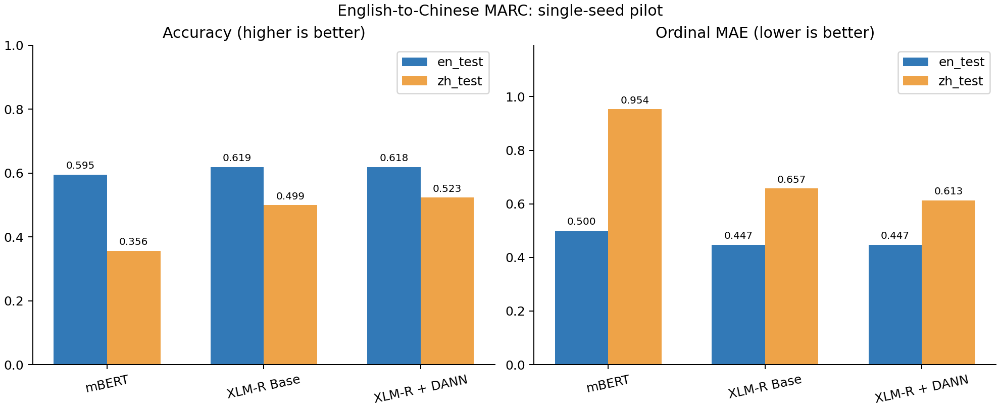
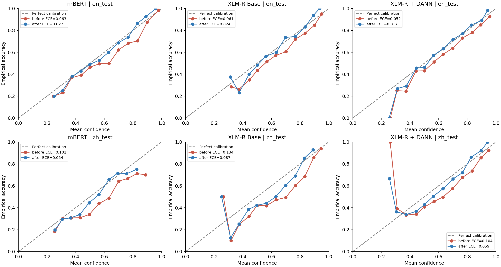
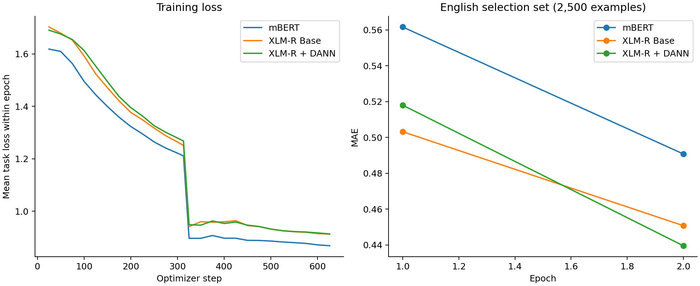
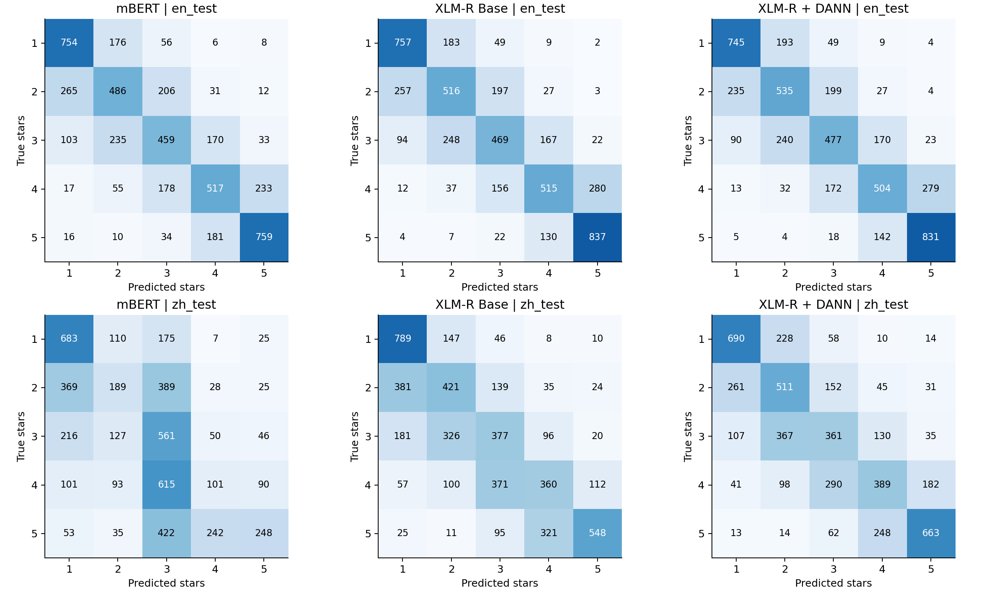

初步复现报告 / Pilot Reproduction Report
单次初步实验 / single-seed pilot · seed=42 · English training n=10,000 · epochs=2 · max length=128 · RTX 4060 Laptop 8 GB
Completed models: 3/3 / 已完成模型：3/3
DANN在中文测试集的准确率变化为 +2.38 个百分点，MAE变化为 -0.0446。这是单种子初步结果。
XLM-R相对mBERT的中文准确率变化为 +14.26 个百分点。
mBERT的中文ECE：0.1008 → 0.0539；温度参数仅用英文校准集拟合。
XLM-R Base的中文ECE：0.1338 → 0.0870；温度参数仅用英文校准集拟合。
XLM-R + DANN的中文ECE：0.1041 → 0.0592；温度参数仅用英文校准集拟合。
所有数字由保存的预测结果自动计算。一次随机种子不能证明稳定提升，也不构成统计显著性结论。
| split | n | purpose |
|---|---|---|
| English training | 10000 | same stratified sample for all three models |
| Chinese training | 10000 | DANN only, uniform sample without inspecting labels; labels removed |
| English selection | 2500 | select checkpoint with minimum MAE |
| English calibration | 2500 | fit temperature after model selection |
| English test | 5000 | final evaluation only |
| Chinese test | 5000 | final evaluation only |
| language | training_rows | mean_body_characters | books_fraction |
|---|---|---|---|
| en | 200000 | 178.8463 | 0.0188 |
| zh | 200000 | 51.0198 | 0.3153 |
这是完整原始训练集的描述统计。中英文产品类别分布差异明显，因此本次迁移包含语言及类别分布共同变化。
复现其五星分类和English→Chinese设置。缩小训练样本、训练轮数和输入长度；本次是pilot，原论文数字仅供背景参考。
| model | test_split | calibration | target_unlabeled_used | n | accuracy | macro_f1 | mae | ece | nll | brier | temperature |
|---|---|---|---|---|---|---|---|---|---|---|---|
| mbert | en_test | before | False | 5000 | 0.5950 | 0.5910 | 0.4998 | 0.0625 | 0.9505 | 0.5212 | 1.0000 |
| mbert | zh_test | before | False | 5000 | 0.3564 | 0.3299 | 0.9536 | 0.1008 | 1.4953 | 0.7511 | 1.0000 |
使用公开预训练权重进行MARC下游微调。MARC不是XLM-R原论文的评测任务，因此这里是下游应用实验，不能声称复制原论文结果表。
| model | test_split | calibration | target_unlabeled_used | n | accuracy | macro_f1 | mae | ece | nll | brier | temperature |
|---|---|---|---|---|---|---|---|---|---|---|---|
| mbert | en_test | before | False | 5000 | 0.5950 | 0.5910 | 0.4998 | 0.0625 | 0.9505 | 0.5212 | 1.0000 |
| mbert | zh_test | before | False | 5000 | 0.3564 | 0.3299 | 0.9536 | 0.1008 | 1.4953 | 0.7511 | 1.0000 |
| xlmr | en_test | before | False | 5000 | 0.6188 | 0.6130 | 0.4474 | 0.0612 | 0.9224 | 0.5064 | 1.0000 |
| xlmr | zh_test | before | False | 5000 | 0.4990 | 0.4951 | 0.6574 | 0.1338 | 1.2815 | 0.6496 | 1.0000 |
固定相同英文样本，对比source-only与使用无标签中文数据的DANN。域标签为语言；使用Transformer和五星任务，区别于原论文词袋二分类。
| model | test_split | calibration | target_unlabeled_used | n | accuracy | macro_f1 | mae | ece | nll | brier | temperature |
|---|---|---|---|---|---|---|---|---|---|---|---|
| xlmr | en_test | before | False | 5000 | 0.6188 | 0.6130 | 0.4474 | 0.0612 | 0.9224 | 0.5064 | 1.0000 |
| xlmr | zh_test | before | False | 5000 | 0.4990 | 0.4951 | 0.6574 | 0.1338 | 1.2815 | 0.6496 | 1.0000 |
| xlmr_dann | en_test | before | True | 5000 | 0.6184 | 0.6133 | 0.4468 | 0.0520 | 0.9225 | 0.5062 | 1.0000 |
| xlmr_dann | zh_test | before | True | 5000 | 0.5228 | 0.5211 | 0.6128 | 0.1041 | 1.2022 | 0.6187 | 1.0000 |
每个模型使用2,500条英文校准样本拟合一个T；英文/中文测试集只用于最终评估。中文校准效果不保证改善。
| model | test_split | calibration | target_unlabeled_used | n | accuracy | macro_f1 | mae | ece | nll | brier | temperature |
|---|---|---|---|---|---|---|---|---|---|---|---|
| mbert | en_test | before | False | 5000 | 0.5950 | 0.5910 | 0.4998 | 0.0625 | 0.9505 | 0.5212 | 1.0000 |
| mbert | en_test | after | False | 5000 | 0.5950 | 0.5910 | 0.4998 | 0.0215 | 0.9359 | 0.5132 | 1.2687 |
| mbert | zh_test | before | False | 5000 | 0.3564 | 0.3299 | 0.9536 | 0.1008 | 1.4953 | 0.7511 | 1.0000 |
| mbert | zh_test | after | False | 5000 | 0.3564 | 0.3299 | 0.9536 | 0.0539 | 1.4596 | 0.7392 | 1.2687 |
| xlmr | en_test | before | False | 5000 | 0.6188 | 0.6130 | 0.4474 | 0.0612 | 0.9224 | 0.5064 | 1.0000 |
| xlmr | en_test | after | False | 5000 | 0.6188 | 0.6130 | 0.4474 | 0.0244 | 0.9072 | 0.5008 | 1.2313 |
| xlmr | zh_test | before | False | 5000 | 0.4990 | 0.4951 | 0.6574 | 0.1338 | 1.2815 | 0.6496 | 1.0000 |
| xlmr | zh_test | after | False | 5000 | 0.4990 | 0.4951 | 0.6574 | 0.0870 | 1.2152 | 0.6320 | 1.2313 |
| xlmr_dann | en_test | before | True | 5000 | 0.6184 | 0.6133 | 0.4468 | 0.0520 | 0.9225 | 0.5062 | 1.0000 |
| xlmr_dann | en_test | after | True | 5000 | 0.6184 | 0.6133 | 0.4468 | 0.0175 | 0.9094 | 0.5023 | 1.2218 |
| xlmr_dann | zh_test | before | True | 5000 | 0.5228 | 0.5211 | 0.6128 | 0.1041 | 1.2022 | 0.6187 | 1.0000 |
| xlmr_dann | zh_test | after | True | 5000 | 0.5228 | 0.5211 | 0.6128 | 0.0592 | 1.1547 | 0.6067 | 1.2218 |
来自Table 2和Table 3，body + title + category。原论文200k训练样本、15轮、8e-7学习率、body截断180wordpieces；本次10k、2轮、2e-5、总长128。禁止据此宣称超过原论文。
| setting | original_accuracy | original_MAE |
|---|---|---|
| English supervised, full 200k, 15 epochs | 0.6330 | 0.4300 |
| English to Chinese zero-shot, full 200k, 15 epochs | 0.3970 | 0.9320 |




| model | parameters | training_minutes | peak_cuda_GB | best_epoch | selection_MAE |
|---|---|---|---|---|---|
| mbert | 177266693 | 3.2482 | 3.5982 | 2 | 0.4908 |
| xlmr | 277456901 | 4.1014 | 6.0058 | 2 | 0.4508 |
| xlmr_dann | 277654279 | 5.4486 | 6.0338 | 2 | 0.4396 |
单种子、小样本、固定超参数，尚未做显著性检验或多种子重复。目标语言类别分布不同，且product category为英文输入字段；结果包含语言和类别分布共同变化，不能归因于纯语言效应。DANN看到目标语言无标签文本，因此与zero-shot模型的数据访问权限不同。训练域分类准确率接近50%也不能单独证明有效对齐。
Source-only temperature calibration may fail under target-language distribution shift. ECE uses 15 equal-width bins. Brier is the mean per-example sum of squared class-probability errors, not divided by five. Accuracy and macro-F1 are proportions (0–1); MAE is measured in star-rating units.